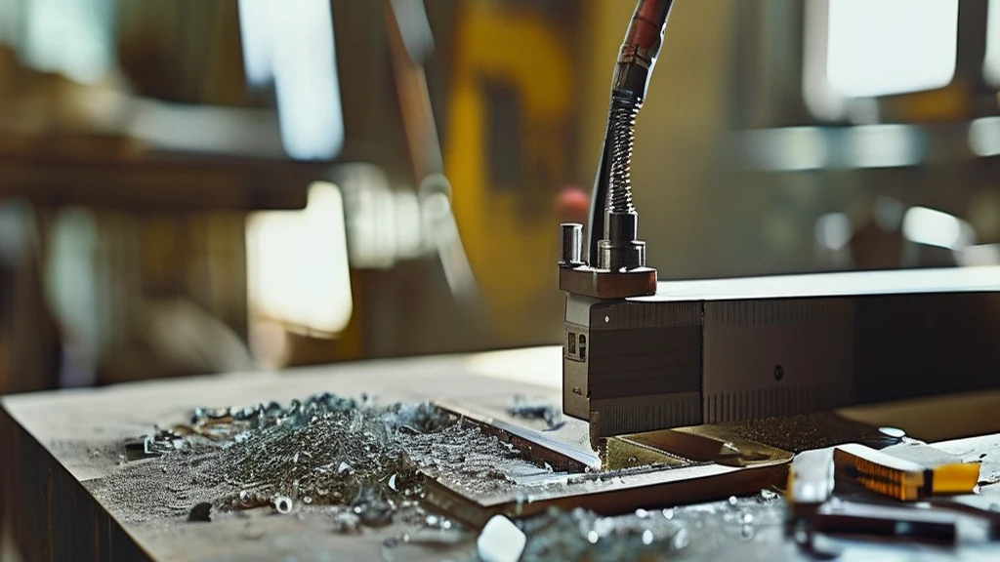
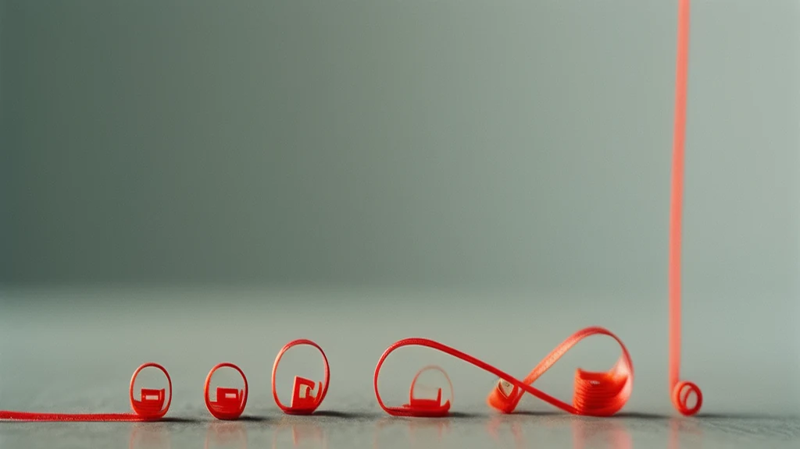
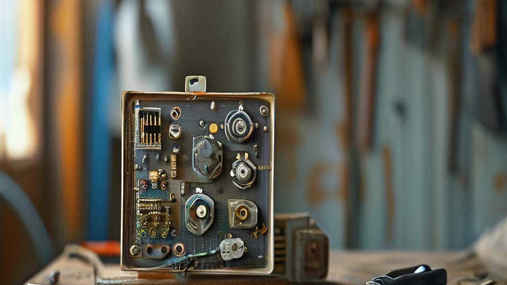

圖片由 AI輔助創作Image by AI
【鄭哥點評】欄目：鄭哥博客點評｜日期：2026-11-20
華強北主街那間「智能硬件定製體驗中心」，把硬件創業的時間表改寫了：十分鐘定外觀、一小時手搓一台 AI 硬件、一星期出海。我關心的不是它有多快，而是**快完之後，錢往哪兒流**。

圖片由 AI輔助創作Image by AI
一、一個創意進，一個產品出
華強北主街上的「全球智能硬件定製體驗中心」已經開放，從零到建成只用了一個月。它打的口號是「1+1+1」：十分鐘定製外觀結構，一小時手搓 AI 硬件產品，一週讓創意變成現實。
現場擺的是桌面級與工業級數字加工設備：桌面四軸 CNC 切金屬、3D 打印機出塑料件、激光雕刻機和 UV 打印機做圖文與薄板切割。有體驗者選好圖案，十分鐘就拿到一件專屬定製品。
來源：鳳凰網·大風號｜https://feng.ifeng.com/c/8y67dQYWctx

圖片由 AI輔助創作Image by AI
二、三十分鐘做出一台 AI 翻譯器
定製中心從立創硬件開源平台精選了 14 大類、200 餘種方案，做一台專屬 AI 硬件像搭積木。以 AI 翻譯器為例：先選外殼顏色，再選聯網方式和翻譯語種，方案提交後工程師協助拼接，約二十分鐘成形；再加角色、聲音、語言等個性設置，程序燒錄與調試約十分鐘。從選配置到拿到成品，前後半小時。
現有方案不夠用，還能調動整個華強北：連接 35 家專業市場、11 萬多家商戶，提供 80 個品類、上千套解決方案。說出需求，系統生成採購清單並附商家地址，商圈 1.45 平方千米內一小時送達。
來源：鳳凰網·大風號｜https://feng.ifeng.com/c/8y67dQYWctx

圖片由 AI輔助創作Image by AI
三、AI 補上工程那一段
要做市面上還沒有開源方案的東西，現場配了一個叫 SHADOW GO 的大模型，沉澱的是硬件開發數據——包括嘉立創與華強北的產業數據。用戶說出創意，模型一步步提問幫你明確需求，再生成產品方案、物料清單（BOM）和 PCB 圖紙，連產品需求文檔、規格說明都能出。
官方給的完成度是 80% 到 85%，剩下的由工程師補完。例子是一款血糖測量手環：只描述需求，AI 先出初步設計並做工程化驗證。
來源：鳳凰網·大風號｜https://feng.ifeng.com/c/8y67dQYWctx
圖片由 AI輔助創作Image by AI
四、鄭哥點評：門檻沒了，錢去哪
先講清楚這門生意到底賣什麼。它賣的不是廠房、不是設備，是**把「一個想法」壓縮成「一個可賣的實物」的那段時間**。過去這段時間要三個月：找方案、找供應商、打樣、改模、小批量試產；現在被壓到三十分鐘到一週。
**投不投：不投「代工」，可投「需求端」。** 理由：門檻一旦被壓平，做同樣一台 AI 翻譯器的人會從幾十個變成幾千個，代工環節的毛利必然被壓到接近加工費——中心自己也說了，它的價值在「集合」而不是「製造」，那一層賺的是流量與服務費，不是產品利潤。真正值錢的位置往上移了：誰知道哪些人願意為什麼功能付錢，誰就拿走定價權。
三個更具體的方向可以看：① **選品**——同樣的 200 套方案，賣給哪一群人、講什麼場景，決定毛利差幾倍；② **渠道**——國內卷不動就去海外，現場提到一週出海、200 多家國際物流資源，這是把供應鏈優勢換成外幣的路徑；③ **品牌與合規**——認證、外觀專利、售後，這三樣代工幫不了你，但客戶願意為它多付錢。
反過來，哪些不要碰：純拼價格的白牌小家電（深圳一個檔口就能做，價格戰沒有底）、沒有售後能力的智能硬件（AI 硬件壞了要調試，退貨率是殺手）、以及靠一個爆款喫三年的念頭（方案開源之後，爆款壽命以月計）。
一句判斷標準：**如果這門生意的毛利，來自「別人做不到」，那它撐不過半年；如果來自「別人不知道該賣給誰」，那它能活。**華強北把「做不到」這件事解決了，剩下的是判斷力——這恰好是我們能做的事。
圖片由 AI輔助創作Image by AI
\[Zheng Ge's Take\] Column: Zheng Ge's blog commentary | Date: 2026-11-20
The customisation centre on Huaqiangbei's main street has rewritten the hardware timetable: ten minutes for a shell, an hour to hand-build an AI device, a week to ship abroad. The interesting question is not how fast it is, but where the money goes once everything is fast.
圖片由 AI輔助創作Image by AI
1. A creative idea in, a product out
A 'global smart hardware customisation centre' has opened on the main street of Huaqiangbei, built from nothing in a single month. Its pitch is 1+1+1: ten minutes for the shell, one hour to hand-assemble an AI hardware product, one week to turn an idea into something real.
The floor holds desktop and industrial-grade machines: a four-axis desktop CNC for metal, 3D printers for plastics, laser engravers and UV printers for graphics and thin-sheet cutting. One visitor picked a pattern and walked away with a custom piece in ten minutes.
Source: 鳳凰網·大風號 | https://feng.ifeng.com/c/8y67dQYWctx
圖片由 AI輔助創作Image by AI
2. Thirty minutes to build an AI translator
The centre curates 14 categories and more than 200 designs from an open hardware platform, so building a custom AI device works like stacking blocks. Take an AI translator: choose the shell colour, the connectivity and the languages; engineers help assemble it in about twenty minutes, then spend another ten flashing firmware and tuning voice and persona. Half an hour from configuration to finished unit.
If the 200 designs do not fit, the whole of Huaqiangbei can be pulled in: 35 specialist markets, more than 110,000 merchants, 80 categories and over a thousand solution sets. Describe the need and the system generates a parts list with shop addresses; inside the 1.45 square kilometre district, delivery takes an hour.
Source: 鳳凰網·大風號 | https://feng.ifeng.com/c/8y67dQYWctx
圖片由 AI輔助創作Image by AI
3. AI fills in the engineering gap
For products with no open-source design, the centre runs a model called SHADOW GO trained on hardware development data, including industrial data from the PCB platform and from Huaqiangbei itself. The user describes the idea; the model asks questions to pin down requirements, then produces a product plan, a bill of materials and a PCB layout, along with requirement and specification documents.
The stated completeness is 80 to 85 per cent, with engineers finishing the rest. One example given is a blood-glucose wristband: describe the need and the model drafts a first design and runs engineering validation.
Source: 鳳凰網·大風號 | https://feng.ifeng.com/c/8y67dQYWctx
圖片由 AI輔助創作Image by AI
4. My take: with the barrier gone, where does the money go
Be clear about what this business actually sells. Not factories, not machines: it sells the time between an idea and a sellable object. That used to take three months - find a design, find suppliers, prototype, retool, small batch. Now it is thirty minutes to a week.
Invest or not: I would not invest in the contract manufacturing, but I would invest in the demand side. Once the barrier flattens, the number of people building the same AI translator goes from dozens to thousands and the assembly margin collapses toward a processing fee. The centre itself says its value is aggregation rather than manufacturing; that layer earns traffic and service fees, not product profit. The valuable position has moved upward: whoever knows which customers will pay for which feature holds the pricing power.
Three concrete directions: selection - the same 200 designs, sold to a different audience with a different story, can differ several times over in margin; channels - when the domestic market is crowded, the one-week shipping and 200-plus international logistics partners turn supply-chain advantage into foreign currency; brand and compliance - certification, design patents and after-sales, none of which contract manufacturing can give you, all of which customers pay extra for.
What to avoid: white-label small appliances competing purely on price; smart hardware without after-sales capability, where returns kill you; and the idea of living off one hit product for three years, when open designs shorten a hit's life to months.
One test: if the margin comes from something others cannot do, it will not last six months; if it comes from knowing who to sell it to, it will survive. Huaqiangbei has solved 'cannot do'. What is left is judgement - which happens to be our business.